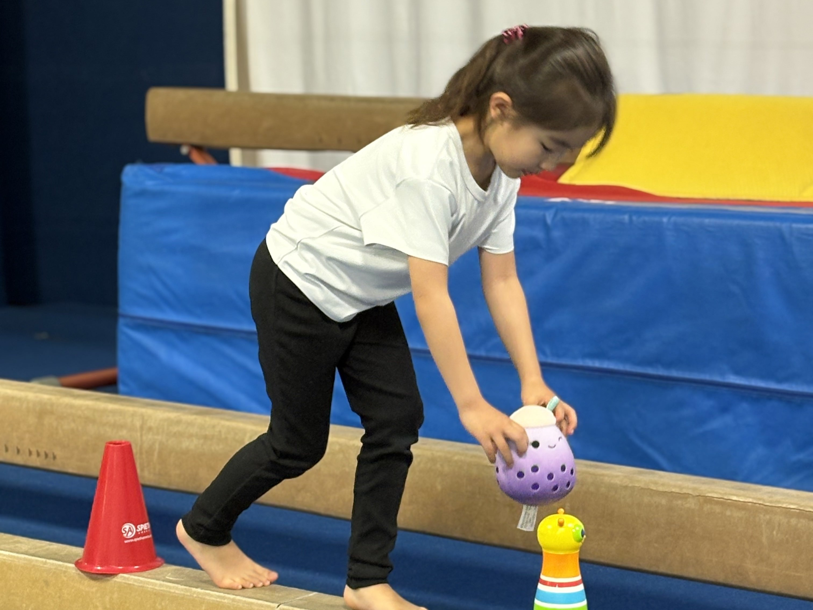
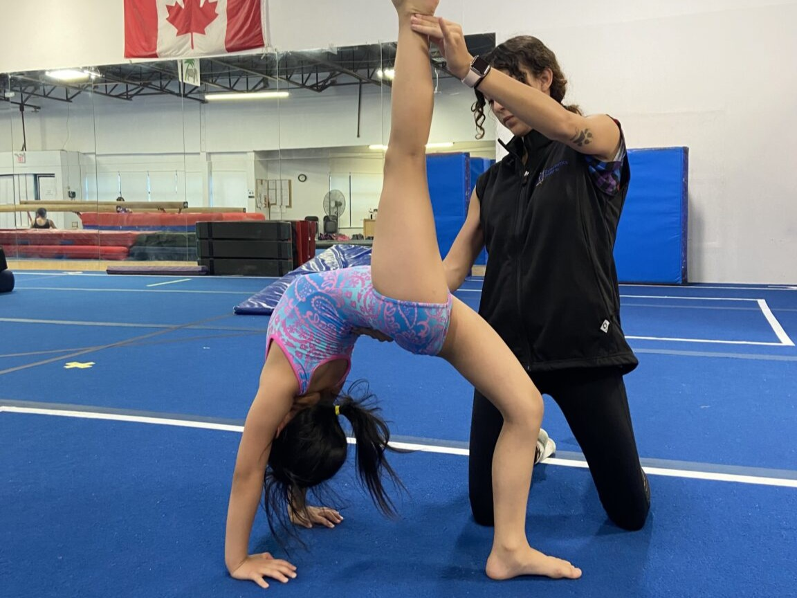
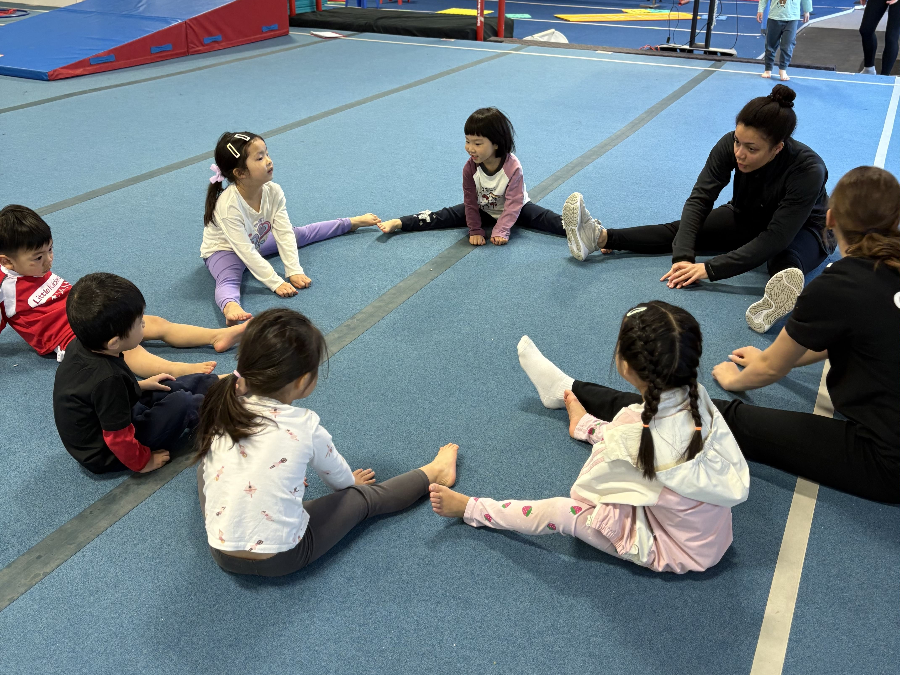
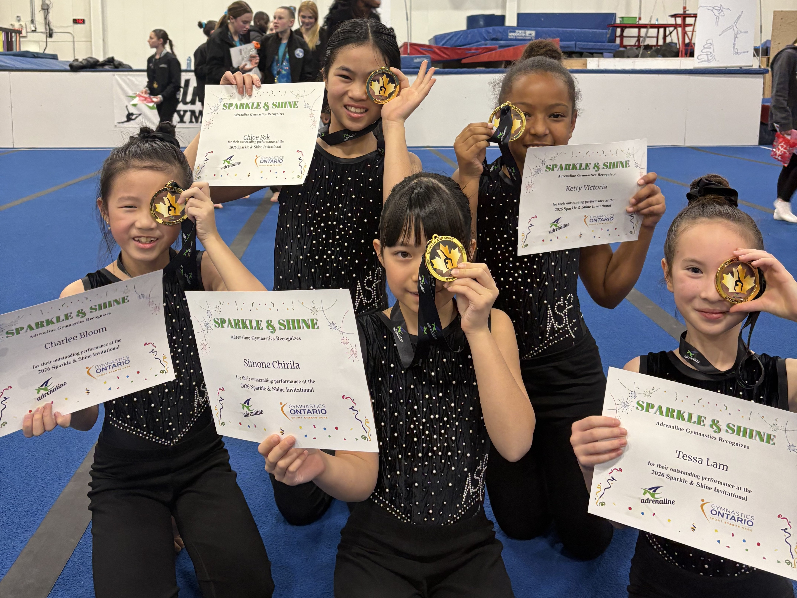

About Us
Benefits of Gymnastics
Why gymnastics is one of the best activities for growing children
Gymnastics is one of the most complete physical activities a child can pursue. Beyond the sport itself, it builds a foundation that carries into every aspect of life - from focus and discipline to confidence and teamwork.
The Best Advantage You Can Give Your Child
What do vault, parallel bars, the balance beam, and floor exercises have to teach a child about potential and kinetic energy, centripetal force, and geometry?
Recreational gymnastics develops a broad range of skills that benefit children both inside and outside the gym.
- Creativity and spatial awareness
- Strength, power and coordination
- Goal setting and perseverance
- Work ethic and self-discipline
What each apparatus teaches

Physical and Emotional Well-Being at Every Age
The benefits of recreational gymnastics for youth span both physical and emotional development, and they evolve as children grow.
For younger children, the sport develops flexibility, strength, grace, and discipline while promoting positive self-esteem in a supportive environment.
For adolescents and youth, gymnastics supports cross-training - improving body strength, stamina, and the ability to make quick, independent decisions under pressure.
How it develops the whole child
- Through sports participation, children develop social and emotional skills, moral values, and a better sense of self through increased confidence and perceived competence. [1]
- Group classes teach children to communicate, cooperate, and resolve issues with peers in a supervised environment. Children who believe they are physically competent are also perceived as more interpersonally competent by their teachers. [2]
- High-level gymnasts learn to stay poised under stress and make real-time adjustments mid-performance - qualities found in strong leaders.
- Sports involvement influences the total child - physical, social, and emotional competence develop together. [3]

A Fun Way to Stay Active and Healthy
Aerobic activity raises your child's heart rate and keeps it elevated - increasing oxygen delivered to their heart and muscles throughout every session.
Over time, children who stay active through gymnastics show improvements in:
- Mood and emotional regulation
- Self-esteem and body confidence
- Overall energy levels and focus
- Sleep quality and daily well-being
Why gymnastics specifically
- Gymnastics engages the whole brain, stimulating cognitive growth and encouraging rounded thinking from an early age.
- Safe weight-bearing movement builds strong, healthy bones - especially beneficial for toddlers and young children.
- Committing to a regular training schedule instills discipline, consistency, and follow-through.
- There is always a new skill to learn, so children stay engaged and challenged in every single class.
Health Canada recommends at least 60 minutes of moderate-to-vigorous activity daily for children aged 6–17.

Building Interpersonal Skills Through Shared Experience
Interactive camp and class experiences are integral to developing a complete child. Interpersonal skills - not just academic ones - determine long-term success.
At ASF, children build these skills every day:
- Active listening and communication
- Self-regulation and patience
- Empathy and understanding others' needs
- Meaningful, lasting friendships
What camp activities practice
- Teamwork through crafts and collaborative group challenges.
- Patience from waiting for turns on equipment in a structured setting.
- Leadership by helping set up gymnastics circuits and guiding peers.
- Responsibility through managing belongings and regulating behaviour throughout the day.
- Cooperation by engaging with a diverse group of children from different backgrounds.
Research support
- Developing socially appropriate behaviours at a young age prevents challenges that become harder to alter as children age. [4]
- Working on social skills as early as kindergarten has lasting positive effects on academic performance. [5,6]
- Camp counsellors help children build social consciousness by teaching feelings management and problem-solving strategies. [7,8]

References
- Seefeldt, V. D. (1987). Handbook for Youth Sports Coaches. Reston, VA: National Association for Sport and Physical Education.
- Weiss, M. R., & Duncan, S. C. (1992). The relation between physical competence and peer acceptance in the context of children's sport participation. Journal of Sport and Exercise Psychology, 14, 177-191.
- Ewing, M. E., Gano-Overway, L. A., Branta, C. F., & Seefeldt, V. D. (2002). The role of sports in youth development. Paradoxes of Youth and Sport, 14-48.
- Renck Jalongo, M. (Ed.). (2014). Teaching Compassion: Humane Education in Early Childhood (Vol. 8). Netherlands: Springer.
- McClelland, M. M., Morrison, F. J., & Holmes, D. L. (2000). Children at risk for early academic problems: the role of learning-related social skills. Early Childhood Research Quarterly, 15(3), 307-29.
- McClelland, M. M., & Morrison, F. J. (2003). The emergence of learning-related social skills in preschool children. Early Childhood Research Quarterly, 18(2), 206-24.
- Khusnidakhon, K. (2021). The importance of enhancing social skills of preschoolers. European Science Journal, 2(3), 75-8.
- Mathieson, K. (2005). Grown-ups make a difference! In Social Skills in the Early Years: Supporting Social and Behavioural Learning. London: Sage Publications.